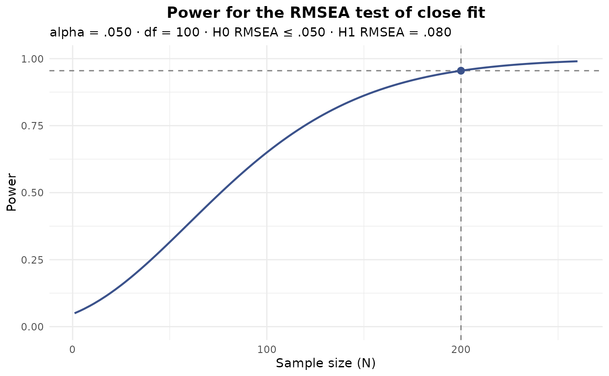
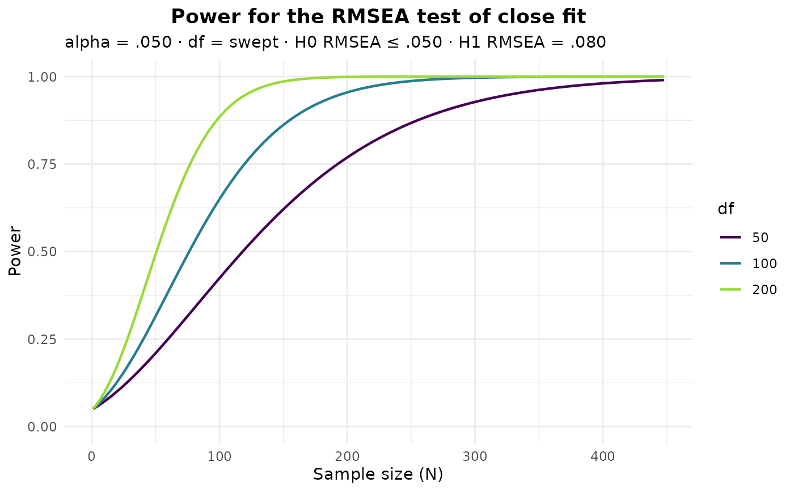
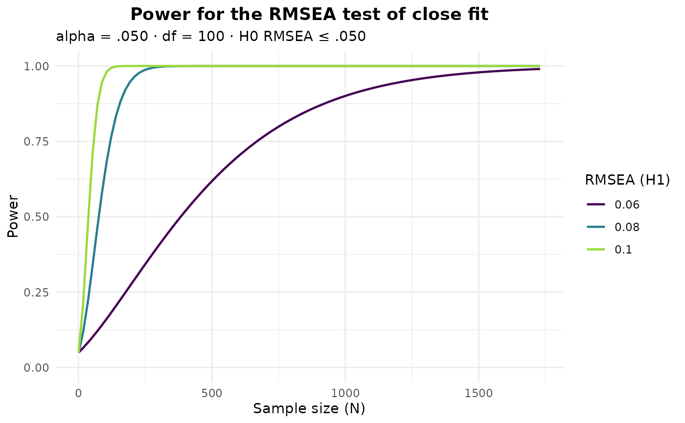

Draws the analytic RMSEA power (MacCallum, Browne, & Sugawara, 1996) of an
efa_power() result as a function of the (per-group) sample size, mirroring
semTools::plotRMSEApower() but returning a ggplot2::ggplot object rather than
drawing to the active device. The test, its null and alternative RMSEA, the
significance level, and the number of groups are taken from the object; only the
sample-size axis is swept, with an optional sweep of the degrees of freedom or the
alternative RMSEA to overlay several curves.
Usage
# S3 method for class 'efa_power'
plot(x, n = NULL, df = NULL, eps1 = NULL, ...)Arguments
- x
An object of class
efa_power(output fromefa_power()).- n
numeric. The (per-group) sample sizes to evaluate. If
NULL(the default) a sequence bracketing the object's sample size is chosen automatically.- df
numeric. The model degrees of freedom (must be positive). Defaults to the object's
df; a vector of length greater than one draws one curve per value.- eps1
numeric. The alternative-hypothesis RMSEA (must differ from the null
eps0). Defaults to the object'seps1; a vector of length greater than one draws one curve per value. At most one ofdfandeps1may be a vector.- ...
Not used; for consistency with the generic.
Value
A ggplot2::ggplot object.
Details
When the plotted curve is the object's own – a single curve with neither df nor
eps1 overridden – it is annotated with the object's result: a dashed vertical line
at its sample size x$N, a dashed horizontal line at the reference power (the target
power when a sample size was solved for, otherwise the power achieved at x$N), and a
point at x$N and the achieved power. Overriding df or eps1, sweeping either as a
vector, or supplying an n that does not span x$N moves that point off the drawn
curve, so the marks are then omitted.
References
MacCallum, R. C., Browne, M. W., & Sugawara, H. M. (1996). Power analysis and determination of sample size for covariance structure modeling. Psychological Methods, 1(2), 130-149. doi:10.1037/1082-989X.1.2.130
See also
Other power analysis:
efa_power(),
print.efa_power()
Examples
pw <- efa_power(df = 100, N = 200)
# Power curve for the test of close fit, marking the object's own N
plot(pw)

# Overlay several models by sweeping the degrees of freedom
plot(pw, df = c(50, 100, 200))

# Sweep the alternative RMSEA instead
plot(pw, eps1 = c(0.06, 0.08, 0.10))
